The ocelot is found in Mexico and South and Central America. It has also been spotted as far north as Texas in the United States. Adults can weigh up to 24 lbs and can reach up to five feet in body length.
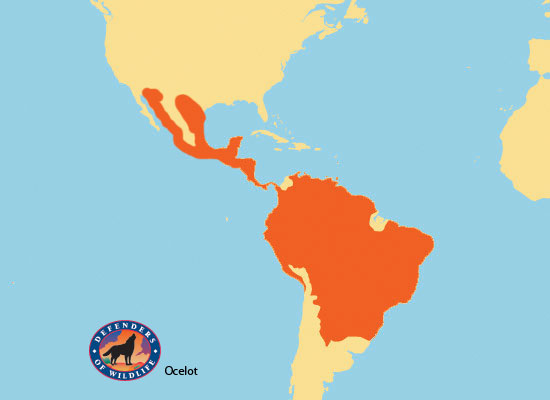The giant panda is an extremely rare animal found mainly in the Western Szechwan province of southwest China. The giant panda can weigh from 165 to 330 lb. Pandas are very good climbers and use their skill to escape predators. They are also able to move quickly and silently allowing them to evade predators through tunnels of bamboo.
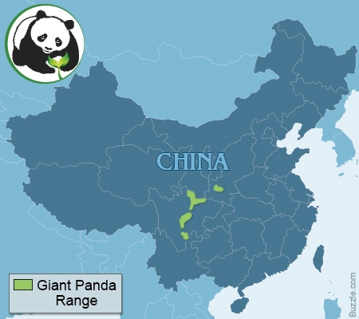The African wild ass is the smallest member of the horse family. Its height is an average 6.5 feet and 4 feet at the shoulder. There are two subspecies of the Africa wild ass: The Nubian wild ass, Equus africanus africanus, and the Somalian wild ass, Equus africanus somaliensis. The Nubian wild ass is believed to be extinct. The Somalian wild ass is historically found in the Denkelia region of Eritrea, north-eastern Ethiopia, and Somalia, but there may only be a few hundred left now in Somalia.
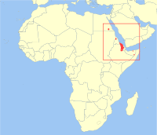The humpback whale is found in the waters of the Atlantic, Arctic, and Pacific Oceans, and also the Bering Sea and the waters surrounding Antarctica. Adults have thick, stout bodies and can weigh over 100,000 lb and grow up to 46 feet long. Their skin is dark blue to black in color and their underparts are white. Their flippers are white with knobs on the edges and can grow to be quite long, reaching up to a third of the their body length. The top of their heads are flat and covered with more fleshy knobs.
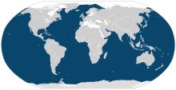The Steller sea-lion is the largest of all seals and sea-lions. Adults males can reach up to 10.5 feet in length and weigh over 2400 lb, and they have large, muscular necks and shoulders. They also have long coarse hair which resembles the mane of African and Asian lions, giving them their name.
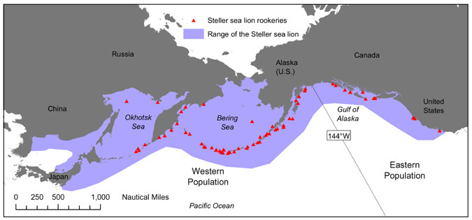The Tasmanian forester kangaroo is a subspecies of the Eastern gray kangaroo found only in Tasmania. They are very powerful jumpers and can jump 30 feet in a single bound. The front limbs are much smaller than the hind legs and have five fingers for grasping objects.
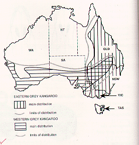The argali is found in the mountains of central Asia and said to be the largest of all wild sheep. Currently, there are nine different subspecies recognized, all of which are considered vulnerable. Males have a whitish neck ruff and a dorsal crest, and they possess two large corkscrew horns that can grow up to 6.3 feet in length. Females have horns, but they are much smaller.
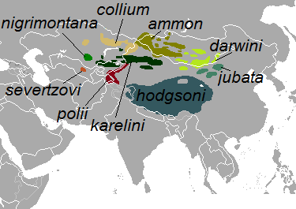The wood bison is a subspecies of the North American Bison and is only found in Canada. It differs from the other North American subspecies (the Plains bison) in many ways. The wood bison can weigh over 1950 lb. Males are larger than females and can reach 12.5 feet in length and around 5.9 feet in height.
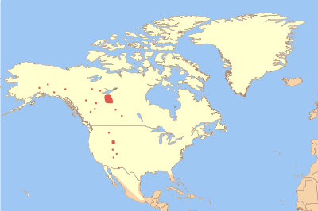The maned wolf is the largest canine species in South America and closely resembles a red fox on stilts because of its long legs. It is neither a wolf or a fox, but rather a member of its own genus. They also possess a mane that runs from the back of the head to the shoulders which can be erected to intimidate other animals when displaying aggression or when they feel threatened.
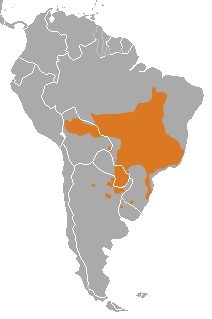The mountain zebra is found in mountainous regions of southwestern Africa. Its coat is characterized by its startling coloration patterns, beautiful patterns of narrow vertical stripes covering its head and body. It averages around 7 to 8.5 feet in length and weighs from 550 to 800 lb. It has long ears and a dewlap below its chin, and strong hooves for climbing in mountainous terrain. Its belly is white with one black stripe.
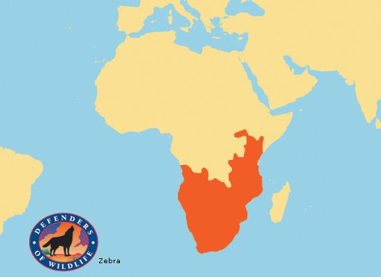The addax is a large antelope with long and thin spiral horns with two and sometimes three twists. There is a patch of black hair on its forehead and it has a black tuft on its tail. The average length of the addax is around 5 feet and it has a shoulder height of around 3 feet. The addax is a desert creature and hardly ever needs water except from the drops of water it gets from eating plants.
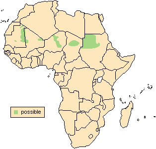